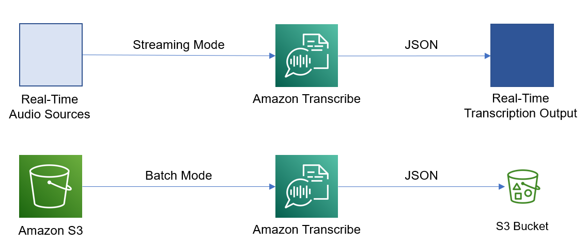

Getting Started
Amazon Transcribe is an automatic speech recognition service that makes it easy to add speech to text
capabilities to any application. Transcribe's features enable you to ingest audio input, produce easy to
read and review transcripts, improve accuracy with customization, and filter content to ensure customer
privacy.
Below is an image that describes how Transcribe works:

How Transcribe Works
Streaming Mode
In streaming mode, Amazon Transcribe transcribes audio in real-time as it's being captured or streamed. This mode is useful for applications that require low-latency transcription, such as live captioning, speech-to-text conversion, or voice-controlled interfaces.
Here's how it works:
- Your application sends an audio stream to the Amazon Transcribe Streaming API.
- Transcribe processes the audio stream in real-time, transcribing the speech as it's received.
- Transcribe sends the transcribed text back to your application in chunks, with minimal delay.
- Your application can process the transcribed text as it's received, enabling real-time capabilities.
Streaming mode is more complex to set up than batch mode, as it requires your application to handle the streaming audio and manage the bi-directional communication with the Transcribe Streaming API.
Batch Mode
In batch mode, Amazon Transcribe transcribes pre-recorded audio files that are stored in an Amazon S3 bucket or available at a specified URL.
Here's how it works:
- Your application submits a transcription job to Amazon Transcribe, specifying the location of the audio file(s) to be transcribed.
- Transcribe retrieves the audio file(s) and transcribes the audio in an asynchronous process.
- Once the transcription job is complete, Transcribe stores the transcribed text and any additional output (e.g., confidence scores, speaker labels) in the specified output location.
- Your application can then retrieve and process the transcribed text and output data.
Batch mode is simpler to set up than streaming mode, as it doesn't require real-time processing or bi-directional communication. However, it introduces a delay between when the audio is submitted and when the transcription is available, making it less suitable for low-latency applications.
Both streaming mode and batch mode offer various configuration options, such as choosing the output format, enabling speaker diarization, and setting data access controls. The mode you choose will depend on the specific requirements of your application and the latency constraints you need to meet.
Using Transcribe
- Access the Amazon Transcribe Console
- Once you've logged into your AWS account, navigate to the Amazon Transcribe console. You can find this by typing "Transcribe" into the search bar at the top of the AWS Management Console.
-
Create a New Transcription Job
- In the Transcribe console, click on the "Create Transcription Job" button.
- You'll be prompted to provide some details about your transcription job, such as the name of the job, the language of the audio file, and the location of the audio file (either an S3 bucket or a URL).
- Configure Transcription Settings
- On the "Configure Transcription Settings" page, you can customize various options for your transcription job, such as the output format (e.g., JSON, SRT), whether to include speaker diarization, and more.
- Review and Submit
- Review the details of your transcription job, and if everything looks correct, click "Submit" to start the transcription process.
- Monitor Transcription Progress
- Once your transcription job has been submitted, you can monitor its progress in the Transcribe console. The job will move through various stages (e.g., Queued, In Progress, Completed) until it's finished.
- Access Transcription Output
- When the transcription job is complete, you can access the transcribed text and any additional output (e.g., confidence scores, speaker labels) from the location you specified in the job settings.
- Review and Use Transcription
- Review the transcribed text for accuracy, and use it as needed in your application or workflow.